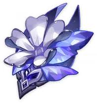
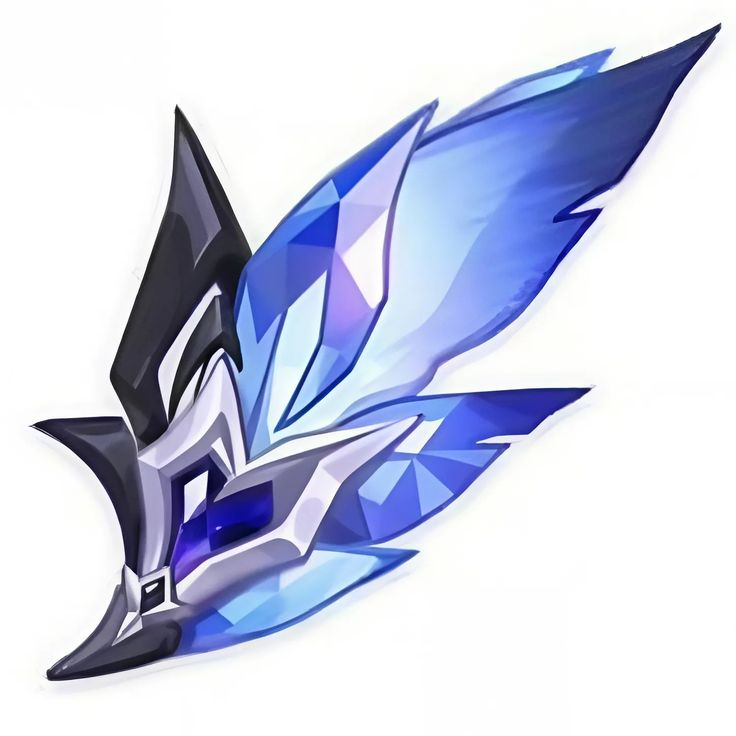
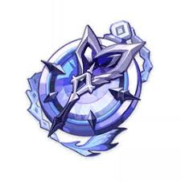
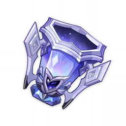
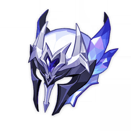
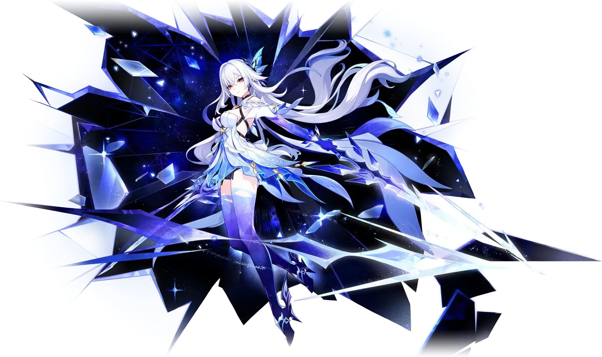

| Finale of the Deep Galleries | ||||
|---|---|---|---|---|
 |
 |
 |
 |
 |
| 2-Piece Set: Cryo DMG Bonus (+15%) | ||||
| 4-Piece Set: When the equipping character has 0 Elemental Energy, Normal Attack DMG is increased by 60% and Elemental Burst DMG is increased by 60%. | ||||
About Character

Skirk adalah karakter yang menggunakan Sword dan memiliki elemen Cryo. Skirk memiliki kemampuan burst cryo yang kuat dan juga desain weapon yang sangat menarik karena dia akan menggunakan tampilan dual sword ketika dalam mode skill atau second form-nya bahkan tanpa team premiumnya skirk tetap dalam mendominasi dispiral abyss dan yang lainnya karena memiliki dmg yang sangat tinggi dan kemampuan mengisi ult yang hanya bergantung dari skill dan void rift yang berdasarlam dari reaksi cryo.
Build Recommendation
Konten rekomendasi artifact dan weapon bisa ditaruh di sini...